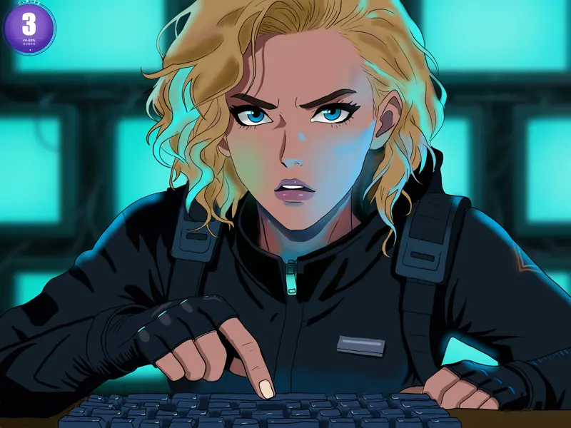
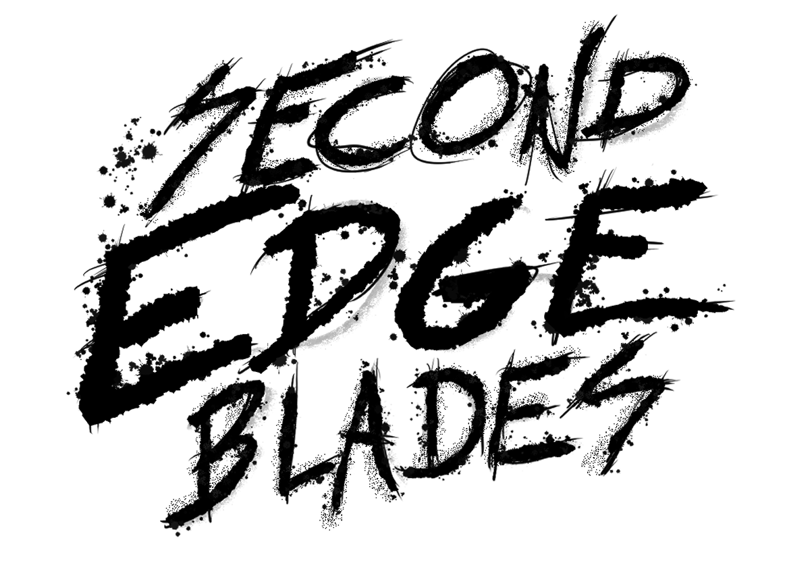
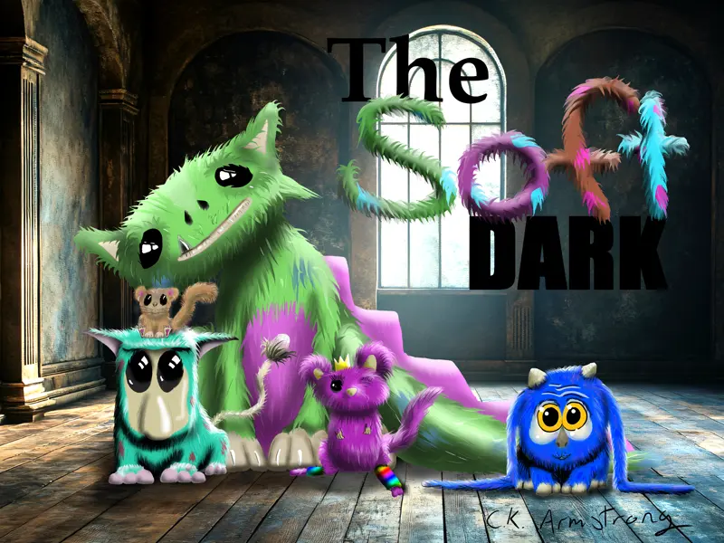
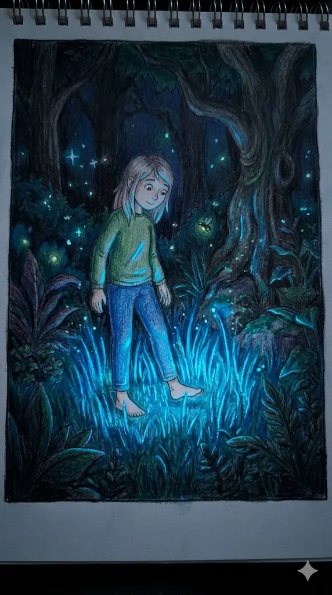
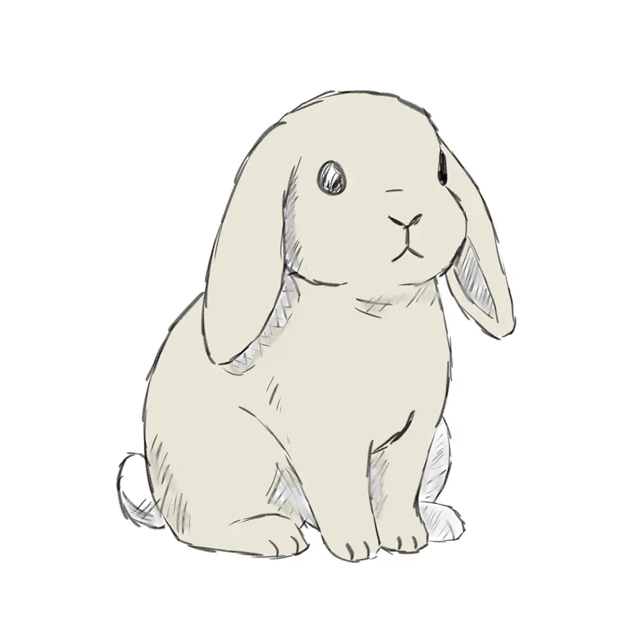

Read
Listen
View
Second Edge Blades
A fictional band fighting a system that weaponizes sound. Transmedia sci-fi.
#Gritty #Dystopian #Serious

View
Read
The Soft Dark
Home to creatures that are ferociously timid. A place that's soft... and dark.
#Cute #Mysterious #Hand-drawn

View
Read
Tales from the Middle
Art that audits the human condition. Observations on the gaps between what we say and do.
#Philosophical #Honest #Audit

Read
View
Ruby & The Guardian
A story about bravery being something you have despite being afraid. Children's fiction.
#Warm #Sincere #Brave

Listen
Hop Twice
Ambient re-imaginings of 20 years of original compositions. Music for deep work.
#Focus #Rest #Ambient
"The air in the room was stale, thick with the scent of ozone and unrecorded history..."
Read
Short Stories
Standalone fiction from the deeper corners of the satchel. Experimental prose.
#Varied #Short #Experimental